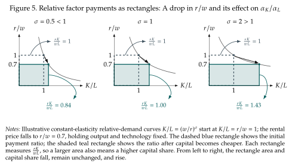

Payment to factors: How does inequality change between capital and labor?¶
Say capital becomes cheaper, for example because of advances in computation. Our previous results show this makes firms substitute away from labor and into capital, pursuing cost reductions. As this substitution happens, there is also a change in the payments to the factors of production. It might be that the substitution increases the payments to capital relative to those of labor. After all, capital demand does go up. But, does it go up enough? Remember that the firm is demanding more capital because it got cheaper. That reduction in the price of capital tends to reduce payments to capital.
What happens to the relative payments to capital and labor when capital becomes cheaper?
To answer this question we first introduce the concept of the input share.
Definition 1.5: Input cost shares
The share of cost going to each input:
The input shares sum to one: \(\,\alpha_K\,+\,\alpha_L\,=\,1\).
When the technology has constant returns to scale total cost equals revenue and we also get input shares in total revenue or income. Recall from (1.3) that \(\,pY\,=\,rK\,+\,wL\).
Our question asks how the relative income share of capital and labor changes with the relative price of labor, \(w/r\). The key for this is noticing that the relative payments to capital and labor satisfy the accounting identity
We can now answer questions about how income is divided between capital and labor. If the relative income share \(\alpha_K/\alpha_L\) goes up we know that \(\alpha_K\) itself went up and \(\alpha_L\) went down because they have to sum to 1.
Seeing relative payments as an area¶
Figure 5 gives the accounting identity a geometric interpretation. With \(K/L\) on the horizontal axis and \(r/w\) on the vertical axis, the rectangle from the origin to a chosen bundle has area \((r/w)(K/L)=rK/(wL)\). When capital becomes cheaper, the rectangle gets shorter because \(r/w\) falls, but wider because the firm chooses more capital relative to labor. The question is whether its area increases or decreases. If substitution is weak, the price decline dominates and capital's relative payment falls; if substitution is strong, the quantity response dominates and its relative payment rises. At unit elasticity the two changes exactly offset. These are relative payments, not the level of total spending on either input.

A price change: does substitution offset the higher price?¶
Suppose \(w/r\) rises. This raises demand for capital relative to labor, but does it also raise expenditure on capital relative to labor? We can use the accounting identity above, take logarithms and differentiate to obtain the answer:
Whether the relative expenditure in capital increases or not depends on the elasticity of substitution. When \(w/r\) rises there is a direct price effect in favor of labor's share, but a substitution effect toward capital. If \(\sigma<1\), quantities adjust less than prices and labor's cost share rises. If \(\sigma>1\), the quantity response dominates and labor's cost share falls. At \(\sigma=1\), the two effects exactly offset and input shares remain constant.
An endowment change: does more capital raise capital's share?¶
Now consider a different experiment: an economy with a fixed, constant-returns technology, competitive factor markets, and fully employed factor supplies. Increase \(K/L\) and allow \(w/r\) to adjust to marginal products. Under constant returns to scale the ratio of capital to labor determines the MRT and the elasticity of substitution. We can therefore use the same results we have derived so far but reason in the opposite direction. We obtain
More capital per worker raises capital's income share if \(\sigma>1\), leaves it locally unchanged if \(\sigma=1\), and lowers it if \(\sigma<1\). The growing factor earns less per unit relative to the other factor; the elasticity tells us whether this relative-price decline outweighs its greater quantity. Here cost shares are also shares of output revenue because constant returns and competitive marginal-product payments imply \(rK+wL=pY\).